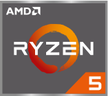

ПроцесориAMD Ryzen™ 7 5800H /
AMD Ryzen™ 5 5600H
Проривний 16-дюймовий ігровий дисплей WQXGA забезпечує візуальну перевагу
Графіка NVIDIA® GeForce RTX ™ 30-ї серії із використанням технології Legion AI Engineдля ігор із високоюроздільною здатністю
Технологія Nahimic 3D-аудіо створює ефект повного занурення в іграх
Створений для перемог на арені та поза нею, Legion 5 Pro оснащений процесором AMD Ryzen™ та відеокартою NVIDIA® GeForce RTX™ 30-ї серії (для ноутбуків) для відтворення ігор у високій роздільній здатності. Перший у світі 16-дюймовий ігровий ноутбук з дисплеєм WQXGA і співвідношенням сторін 16:10 та частотою оновлення до 165 Гц створює "виграшну зону", що надає тобі додаткових переваг та покращує видимість у грі. У поєднанні з аудіотехнологією Nahimic 3D, яка дозволяє розпізнавати кроки в просторі, ти зможеш засікти суперника, який прямує до тебе, ще до того, як він потрапить у зону стрільби.
Відчуй найвищу продуктивність Legion 5 pro із найновішими графічними процесорами для ноутбуків NVIDIA® GeForce RTX ™ 30-ї серії - для геймерів та творців. Обладнаний технологіями Ray Tracing Cores, Tensor Cores, а також потоковими мультипроцесорами, наш тонкий та легкий ноутбук забезпечує найбільш реалістичну графіку з трасуванням променів, та обладнаний можливостями та потужністю штучного інтелекту (ШІ).
Піднімися на новий рівень візуальної переваги за межами ігор у якості FHD - з першим у світі 16-дюймовим ігровим дисплеєм WQXGA (2560 x 1600). Дисплей із технологією NVIDIA® G-Sync і має на 34% збільшену щільність пікселів, підтримку Dolby Vision ™ та VESA DisplayHDR™ 400 із 100% охопленням sRGB і максимальною яскравістю понад 500 ніт. Переконайся, що ти далеко попереду суперників завдяки технології Оverdrive, яка забезпечує частоту оновлення до 165 Гц і час відгуку 3 мс.
Технологія Legion Coldfront 3.0, заснована на досвідові поколінь ігрових пристроїв із максимальною тактовою частотою та нульовим троттлінгом, у ноутбуці Legion 5i рro ще більше покращує виняткову продуктивність охолодження. Інтелектуальна система забору повітря, двох-вентиляторна конструкція з турбонаддувом, впускні вентиляційні отвори під перемикачами клавіш на клавіатурі для більшого повітряного потоку та чотирьох-канальна вивідна система з покращеними тепловими лопатями. Радіатори в поєднанні з новим інтелектуальним режимом ШІ оптимізують продуктивність пристрою у найвибагливіших кіберспортивних іграх до нового рівня без падіння частоти кадрів або переривань у роздільній здатності QHD. Ти навіть можеш контролювати швидкість і навантаження вентиляторів за допомогою системи Q Control 4.0, щоб отримати повну потужність пристрою або заощадити автономність.
Технологія Lenovo Legion AI на базі новітніх процесорів AMD Ryzen™ покоління є нашим найбільш революційними ігровим рішенням. Режим автоматичної оптимізації інтелектуально визначає запуск твоєї гри та оптимізує продуктивність системи за допомогою динамічного розподілу потужності CPU/GPU, щоб забезпечити максимально можливий FPS, незалежно від того, чи обрана тобою гра інтенсивно використовує CPU чи GPU. У режимі Auto-Detect ти отримуєш максимальну частоту кадрів у найбільш популярних іграх класу AAA для ПК.
Клавіатура Legion TrueStrike оснащена інноваційними перемикачами з м'якою посадкою, які забезпечують глибші натискання з однаковою силою при кожному ударі. Це дозволяє вражати ворогів з надзвичайною точністю, з макси- мальною швидкістю старту та зручним рівнем натискання клавіш.
Nahimic кардинально покращує твій ігровий досвід завдяки захоплюючому 3D-аудіо та цікавим функціям для геймерів. Відчуй кришталево чисте спілкуванням з гравцями по команді. Nahimic - це новий спосіб гри і гравці Legion можуть ексклюзивно насолоджуватися перевагами.
Завдяки мобільним процесорам AMD Ryzen™ 5000 серії H, ти зможеш насолоджуватися найкращими ігровими характеристиками на тонкому та легкому ноутбуці з дивовижним часом автономної роботи. Ніколи не йди на компроміси, обираючи ігровий ноутбук.